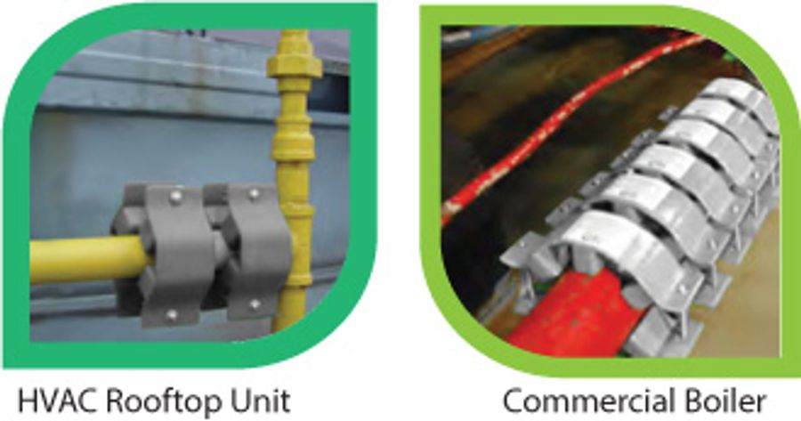

Enviro Explained
Normal Combustion vs. Ortho Energized Combustion
SAVE FUEL, SAVE MONEY and REDUCE EMISSIONS
The normal gas or liquid spray from injected fuel forms droplets (chemical associations — molecular clusters) which do not burn efficiently, wasting fuel in the form of unburned carbon emissions.

Combustion Fuel Saver System uses an Ortho-Hydrogen fluid treatment that burns the fuel so completely it releases substantially more heat energy, saving fuel and reducing emissions.
The Fuel Super Saver is based on NASA's Ortho-Hydrogen rocket fuel saving treatment, which released more BTU energy from the fuel, allowing the rocket's fuel to last longer. The science of Ortho-Hydrogen treatment has been well documented for many years in the CRC — The Engineer's Handbook — with the actual increased BTU test results of just about every simple and complex hydrocarbon molecule listed.
The electromotive energy of the Ortho-Hydrogen treatment going into the fuel works a little like a car battery or a dry cell. In a car battery, electrons flow between lead and zinc plates. The electrolyte is battery acid. In a 1.5 volt battery the electrolyte is a paste. In the EMC Energizer field, the electrolyte is the fuel. When the fuel passes through the EMC Energizer field, electrons flow naturally into the fuel.
Breaks Fuel Drops Into Microdrops
When the naturally clustered fuel molecules (chemical associations) are energized by the electrons, they repulse from each other, breaking up the clusters. Then, as the fuel is sprayed into the combustion chamber, the excited electrons of the fuel instantly try to escape from the smaller fuel droplets by breaking through the surface tension of each droplet and forcing it to instantaneously split into thousands and millions of microdrops.
Middle Molecule Burn-Through
The sum of surfaces of millions of microdrops is exponentially greater than that of a few thousand normal size droplets. Think of the surface of a grapefruit. Now think of the total surface area of 1,000 peas — same volume, more total surface area. At ignition, the fuel molecules on the surface of any drop always burn first. Those in the middle always burn last. In a big droplet, the middle molecules only burn partially or not at all. Soot, smoke, hydrocarbon particulate, NOX and most other emissions are basically unburned or partially burned "middles."
When the bigger droplets are instantly broken into microdrops, there are fewer molecules in the middle. The charged molecules are also dynamically attracted to oxygen, resulting in greater ionization, oxidation, and a greater BTU output — using less fuel and saving money.